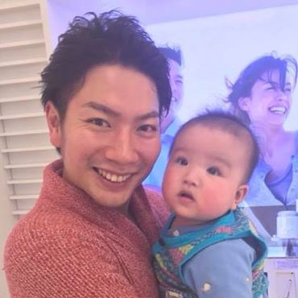
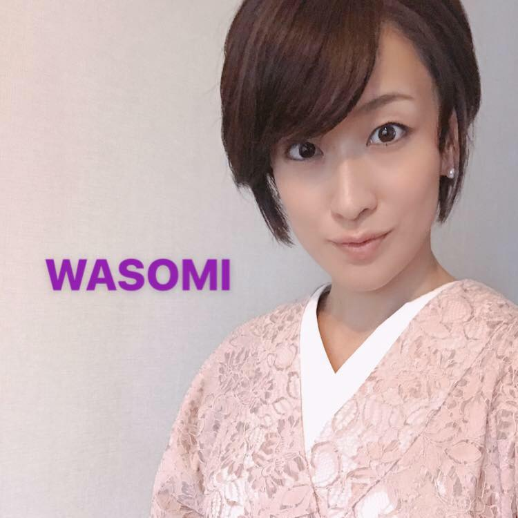
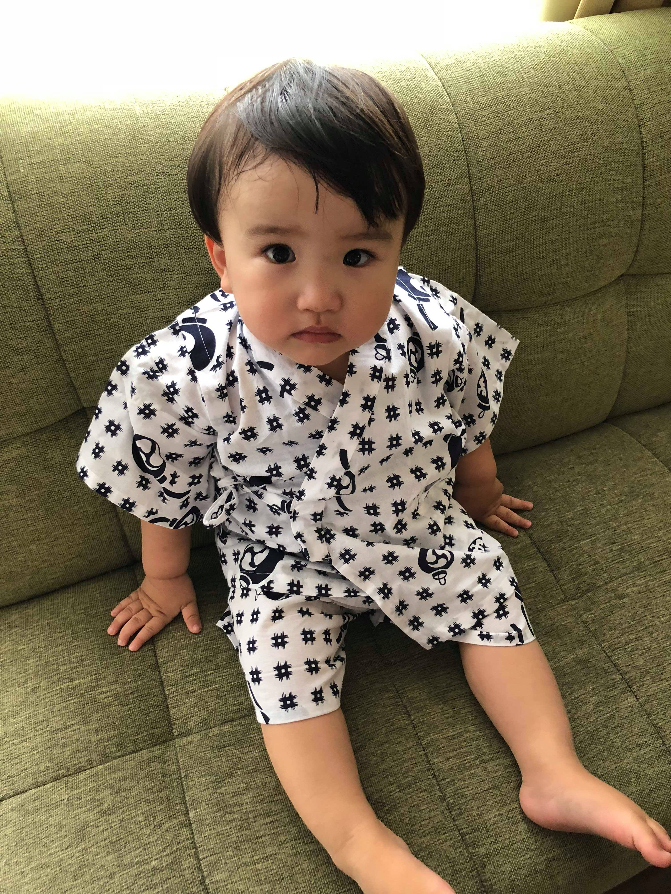
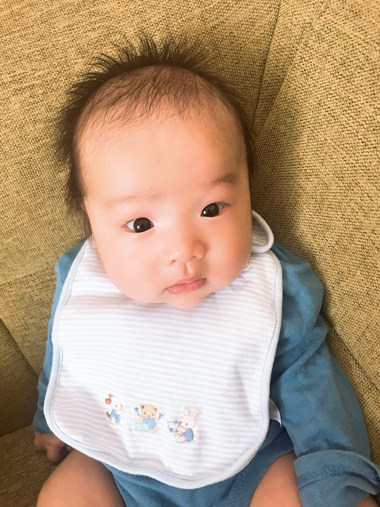

<!DOCTYPE html>
<html lang="en">
<head>
  <title>自己紹介</title>
  <head>
        <link rel="stylesheet" type="text/css" href="index.css">
        </head>
</head>
<body>
    <h1>現在</h1>
    <ul>
    <li>名前　佐治　浩一郎</li>
    <li> 年齢　30歳</li>
    <li>趣味　スポーツ観戦（特にテニスと野球とボクシング)</li>
    <li>職業 株式会社ライジングアドバンス　代表取締役</li>
</ul>   
<table>
    <tr><td></td></tr>
    <tr><td>佐治 浩一郎(30歳)</td></tr>
    <tr><td></td></tr>
    <tr><td>佐治 菜美(34歳)</td></tr>
    <tr><td></td></tr>
    <tr><td>佐治 充樹(1歳)</td></tr>
    <tr><td></td></tr>
    <tr><td>佐治 楓(100日)</td></tr>
</table>
<h2>経歴</h2>
<ul>
    <li>[1988年6月28日]東京都新宿区生まれ</li>
    <li class="note">[2005年12月]高校在学中にプロボクサーの資格取得</li>
    <li>[2006年3月]東京都立板橋高等学校卒業</li>
    <li>３年間ほどプラプラとフリーター生活を堪能〜居酒屋からコールセンターからバーテンやホストまで〜</li>
    <li>[2009年4月]株式会社光通信入社</li>
    <li>[2011年7月]福岡に転勤へ</li>
    <li>[2013年7月]同社退社</li>
    <li>起業準備中の為喰い繋ぐ為に唐揚げ屋さんでアルバイト</li>
    <li>[2013年12月]登記費用を稼ぐ為に治験（モルモット）デビュー！！</li>
    <li>[2014年3月4日]創業</li>
</ul>
<h3 class="Mission">My Mission</h3>
<h4>日本の価値を向上させる。</h4>
</body>
</html>